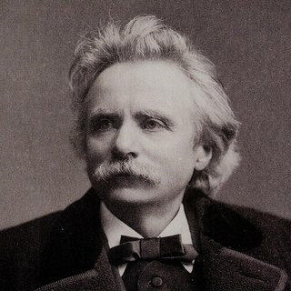

Compositeurs › Edvard Grieg

Edvard Grieg
La voix musicale de la Norvège : il a fait entrer les chants et danses populaires de son pays dans les salles de concert de toute l'Europe.
Sa vie
Il naît à Bergen, en Norvège ; sa mère, pianiste, lui donne ses premières leçons. À quinze ans, il part étudier au Conservatoire de Leipzig, en Allemagne.
De retour au pays, il se passionne pour la musique populaire norvégienne et en fait le cœur de son style. Son Concerto pour piano en la mineur (1868) le rend célèbre dans toute l'Europe.
Il écrit 66 Pièces lyriques pour piano, de courts tableaux musicaux, et vit longtemps dans sa maison de Troldhaugen, près de Bergen, aujourd'hui un musée.
Portrait : Bergen Public Library, aucune restriction de droit d'auteur connue, sur Wikimedia Commons.
.jpg){kind=link}
Anecdotes
- Dans l'antre du roi de la montagne fait partie de la musique de scène pour la pièce Peer Gynt d'Henrik Ibsen, créée en 1876.
- Le morceau décrit Peer Gynt poursuivi par les trolls : le même thème revient toujours plus fort et plus vite.
- En 1870, à Rome, Franz Liszt a déchiffré à vue son Concerto pour piano et l'a encouragé à continuer.
Au piano
- Le secret du roi de la montagne, c'est le crescendo : commence très doucement et lentement et n'arrive au maximum qu'à la fin.
- Les notes staccato doivent être courtes et un peu mystérieuses, comme des pas furtifs.
- Accélère progressivement, sans perdre la précision.
Ses morceaux à apprendre 1 morceau

Apprends-le note par note avec Piano Learning
Avec « Attends la note », le morceau s'arrête jusqu'à ce que tu joues la bonne touche, sur ton téléphone ou sur ton propre piano (l'appli t'écoute). Mains séparées, vitesse dès 10 %, partition toujours sous les yeux.
Télécharge-la gratuitement sur Google Play Gratuit comme La Campanella, la Marche turque, Jingle Bells et Frère Jacques. Des centaines d'autres morceaux avec un seul achat, sans abonnement.